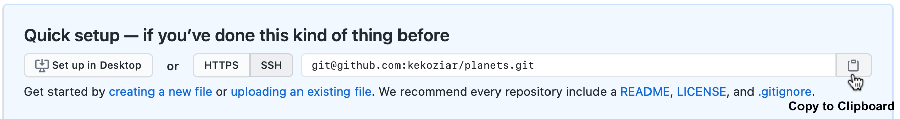

$ mkdir planets
$ cd planets
$ git init3. Remote Code Hosting and GitHub
Version control really comes into its own when we begin to collaborate with other people. We already have most of the machinery we need to do this; the only thing missing is to copy changes from one repository to another.
Systems like Git allow us to move work between two repositories. The repositories can live on separate computers or network locations. In practice, we often use one copy as a central hub, and keep it on the web rather than on someone’s laptop. Most programmers use a hosting service like GitHub to hold the central repositories; and this is true for many BC Government employees.
If you recall, in the pre-workshop, you created a GitHub account and associated it with your GitHub handle (or ID). You also configured your computer with a token (PAT) in a way that should seamlessly allow us to to create a remote repository on GitHub that will be linked to our local repository. Then we will share the changes we’ve made to our current project with the world.
3.1 Creating a Remote Repository
Log in to GitHub. Your personal dashboard is the first page you’ll see when you sign in on GitHub.
Tip: To access your personal dashboard once you’re signed in, click the invertocat
 logo in the upper-left corner of any page on GitHub.
logo in the upper-left corner of any page on GitHub.Click on the
+icon in the top right corner of your personal dashboard, thenNew RepositoryName your repository “planets”. Further down the page are other options available to us that can be toggled to suit the repository’s purpose. For this workshop it’s fine to create a “Public” repository. However, as this repository will be connected to a local repository, it needs to be empty. Therefore, leave “Add a README file” unchecked, and select “None” as options for both “Add .gitignore” and “Add a license.”
Click “Create Repository”. As soon as the repository is created, GitHub displays a page with a URL and some information on how to configure your local repository.

- Make sure HTTPS is selected and then click the clipboard icon to copy the URL. We will use this URL in the next section.
You have effectively done the following on GitHub’s servers:
HTTPS vs SSH - what’s the difference?
HTTP and SSH refer to different protocols Git can use to transfer data. SSH is ubiquitous; many network admins have experience with them and many OS distributions are set up with them or have tools to manage them. Access over SSH is secure as all data transfer is encrypted and authenticated. It is also efficient, making the data as compact as possible before transferring it.
HTTP operates very similarly to the SSH protocol but runs over standard HTTPS ports and can use various HTTP authentication mechanisms, meaning it’s often easier on the user than something like SSH, since you can use things like username/password authentication rather than having to set up SSH keys.
If you remember back to the earlier episode where we added and committed our earlier work on mars.txt, we had a diagram of the local repository which looked like this:

Now that we have two repositories, we need a diagram like this

Note
Our local repository still contains our earlier work on mars.txt, but the remote repository on GitHub appears empty as it doesn’t contain any files yet.
3.2 Connecting to (Cloning) a Remote Repository
Now we connect the two repositories. We do this by making the GitHub repository a remote for the local repository. Remote branches are configured using the git remote command.
Go into the local planets repository, and run this command (using the URL copied to our clipboard):
$ git remote add origin <paste copied URL here>alternatively,
$ git remote add origin https://github.com/<yourusername>/planets.git
Note
“origin” is a local name used to refer to the remote repository. It could be called anything, but “origin” is a convention that is often used by default in git and GitHub, so it’s helpful to stick with this unless there’s a reason not to.
We can check that the command has worked by running git remote -v:
$ git remote -vorigin https://github.com/<yourusername>/planets.git (fetch)
origin https://github.com/<youusername>/planets.git (push)3.2 Push Local Changes to a Remote Repository
Now that authentication is setup, we can return to the remote. The git push command is used to upload local repository content to a remote repository. This command is how you transfer commits from your local repository to the repository on GitHub.
$ git push origin mainEnumerating objects: 16, done.
Counting objects: 100% (16/16), done.
Delta compression using up to 8 threads.
Compressing objects: 100% (11/11), done.
Writing objects: 100% (16/16), 1.45 KiB | 372.00 KiB/s, done.
Total 16 (delta 2), reused 0 (delta 0)
remote: Resolving deltas: 100% (2/2), done.
To https://github.com/<youusername>/planets.git
* [new branch] main -> mainThe git push command takes two arguments: the name of the remote repository and an optional branch name. Used without the branch name (git push origin) will push changes from all local branches to the remote. We may also use git push without specifying any arguments if we’ve already configured the remote for the current branch. Git push will push only changes on our current branch to the remote.
Now our repositories look like:

3.3 Ignoring Things
What if we have files that we do not want Git to track for us, like backup files created by our editor or intermediate files created during data analysis? This often is the case in BC Government data projects.
Let’s create a file called a.csv that contains some data about the Red Planet’s average temperature. Open a new csv using Excel and add two columns named ‘Time’ and ‘Temperature’. Add a few rows of data if you want and save it to the planets directory. Then check the output of git status.
$ git statusOn branch main
Untracked files:
(use "git add <file>..." to include in what will be committed)
a.csv
nothing added to commit but untracked files present (use "git add" to track)Putting data files under version control can be a waste of disk space and may put privacy at risk. As many BC Stats projects involve data with PI or other sensitive information, we generally follow a best practice of not pushing data to GitHub. We accomplish this by creating a file in the root directory of our project called a .gitignore.
.gitignore files are plain text files; you can open the file with your chosen text editor. Open up your favorite text editor and type the following line into the first line of the file:
*.csvThen save and close the file, naming it .gitignore. Don’t forget the dot at the beginning!
Although a .gitignore is a plain text file, it doesn’t carry the “.txt” extension. To be sure you aren’t saving a .gitignore.txt file, check the “Hidden Items” check box under Show/hide in your File Explorer Window.
These patterns tell Git to ignore any file whose name ends in .csv and everything in the results directory. (If any of these files were already being tracked, Git would continue to track them.)
Once we have created this file, the output of git status is much cleaner:
$ git statusOn branch main
Untracked files:
(use "git add <file>..." to include in what will be committed)
.gitignore
nothing added to commit but untracked files present (use "git add" to track)On Unix-based operating system these files are called hidden files but on a PC they are not hidden. As Git Bash provides a Unix-like environments, to see your .gitignore in Git Bash, type “ls -a”.
And since everyone we’re sharing our repository with will probably want to ignore the same things that we’re ignoring, let’s add and commit our .gitignore:
$ git add .gitignore
$ git commit -m "Ignore data file"Now if we try to add our csv files, .gitignore helps us avoid accidentally adding files to the repository that we don’t want to track. It also gives us a way to override the .gitignore with the -f flag.
$ git add a.csvThe following paths are ignored by one of your .gitignore files:
a.csv
Use -f if you really want to add them.Go ahead and push your .gitignore to the remote so other people working on our project can use it too.
$ git pushWe can also ignore full subfolders by adding the folder name to our .gitignore.
Add another line to your .gitignore so it looks like:
*.csv
results/Make a subfolder in planets:
$ mkdir resultsAnd then add a .txt file to that subfolder. Again, open up your favorite text editor and add some text to a file and save your changes. Switch back to command line when you’re finished and check the git status.
$ git statusgit status
On branch main
Untracked files:
(use "git add <file>..." to include in what will be committed)
.gitignore
nothing added to commit but untracked files present (use "git add" to track)The subfolder “results” and it’s contents are ignored. This is handy for keeping all of your data in a single folder. You simply add the data folder to your .gitignore and the contents will not be accidentally pushed.
3.4 Pulling changes from GitHub
Git allows you to work collaboratively, with multiple people making changes to the same repo and sharing those changes through GitHub. We’ve seen how to create a repository and push changes to it; now we will see how to pull another person’s changes from Github.
Start by opening a second terminal window. This window will represent your colleague, working on another computer. In the second window, navigate to the folder one level “up” in the directory tree from where you have your planets repository.
$ lsplanetsYou don’t want to overwrite your first version of planets.git, so you will clone the planets repository to a different location.
$ mkdir collab
$ cd collabClone the planets repo substituting in your Github user name:
git clone https://github.com/<yourusername>/planets.gitCloning into 'planets'...
remote: Enumerating objects: 10, done.
remote: Counting objects: 100% (10/10), done.
remote: Compressing objects: 100% (5/5), done.
remote: Total 10 (delta 2), reused 10 (delta 2), pack-reused 0
Receiving objects: 100% (10/10), done.
Resolving deltas: 100% (2/2), done.
Note
You won’t need to give anyone access on GitHub, because GitHub will recognize both contributors as you.
You can now make a change in your clone of the original repository, exactly the same way as we’ve been doing before. Add a line of text to a .txt file and save it in your cloned repository.
$ cat pluto.txtIt is so a planet!$ git add pluto.txt
$ git commit -m "Add notes about Pluto" 1 file changed, 1 insertion(+)
create mode 100644 pluto.txt$ git push origin mainEnumerating objects: 4, done.
Counting objects: 100% (4/4), done.
Delta compression using up to 12 threads
Compressing objects: 100% (2/2), done.
Writing objects: 100% (3/3), 302 bytes | 302.00 KiB/s, done.
Total 3 (delta 0), reused 0 (delta 0), pack-reused 0
To https://github.com/<yourusername>/planets.git
3abcea2..b792d59 main -> main
Note
We didn’t have to create a remote called origin: Git uses this name by default when we clone a repository. (This is why origin was a sensible choice earlier when we were setting up remotes by hand.)
To download the your changes from GitHub, switch back to the bash window (where you were working in your original repository) and enter:
$ git pull origin mainFrom https://github.com/<yourusername>/planets
* branch main -> FETCH_HEAD
Updating 3abcea2..b792d59
Fast-forward
pluto.txt | 1 +
1 file changed, 1 insertion(+)
create mode 100644 pluto.txtNow the three repositories (original local, second local, and the one on GitHub) are back in sync.